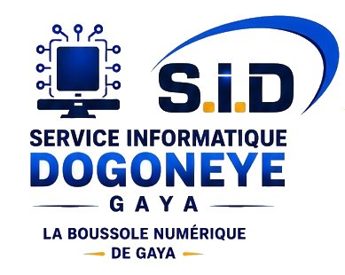

Ingénieur en Informatique | Maintenance | Cybersécurité | Développement Web | Formateur Professionnel
Passionné par les technologies de l'information, je travaille dans la maintenance informatique, la cybersécurité, le développement web et la formation professionnelle.
Dogonney Informatique | Depuis 2021
Gestion des systèmes informatiques, cybersécurité, maintenance, développement web et installation réseau.
ISMT Gaya | 2021 - 2023
Enseignement de la bureautique, architecture et technologie des ordinateurs.
CEFOPROTEG Gaya | 2021 - 2022
Formation en informatique bureautique.
Maintenance Informatique
Cybersécurité
HTML / CSS
WordPress
Email : lawalimahamanemoustapha@gmail.com
Téléphone : +227 97 29 20 91
Gaya - Dosso - Niger